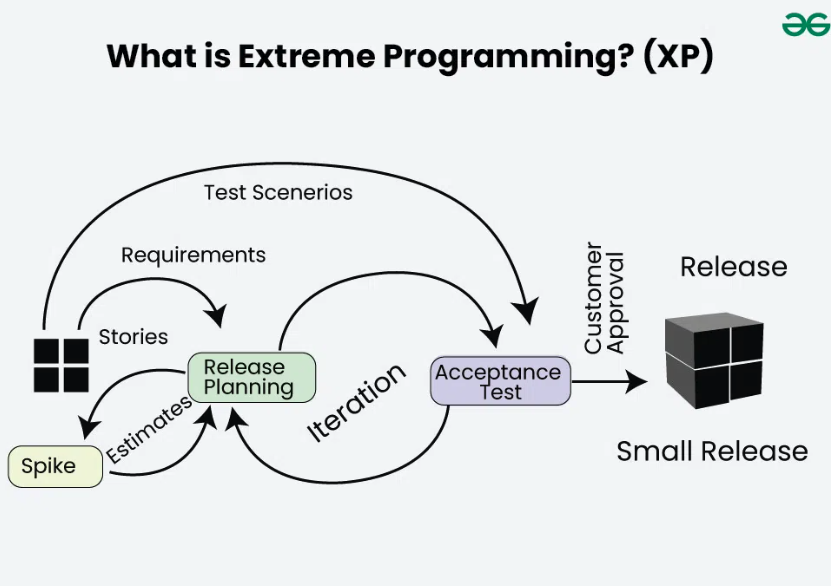

Agiilne tarkvaraarenduse metoodika, mille eesmärgiks on tagada kõrge kvaliteediga tarkvara kiiresti. On väga paindlik ja keskendudeb pidevale tagasisidele, meeskonnatööle ning kliendi nõudmiste täitmisele.
Planning: Esiteks määratakse projekti eesmärgid ja prioriteedid. Kliendiga tehakse koostööd, et luua toote omaduste nimekiri ja arendusplaan, mis keskendub kõige olulisematele funktsioonidele.
Design: Süsteemi arhitektuur ja disain töötatakse välja, keskendudes lihtsusele ja paindlikkusele. Eesmärk on hoida disain lihtsana, et seda oleks hiljem lihtne täiendada või muuta.
Coding: Arendajad kirjutavad koodi lühikestes iteratsioonides, keskendudes ainult sellele, mis on hetkel vajalik. XP praktikas on tavaline paaris programmeerimine (pair programming), kus kaks arendajat töötavad koos, et parandada koodi kvaliteeti ja jagada teadmisi.
Testing: Testimine on pidev protsess, kus iga uus funktsionaalsus testitakse kohe pärast koodi kirjutamist. Testipõhine arendus (TDD) on XP põhikomponent, kus arendajad loovad esmalt testid ja seejärel kirjutavad koodi, mis neid teste läbiks.
Release: Tootmiskeskkonda toomine toimub pidevalt väikeste sammudena. Arenduse lõpus tagatakse, et kõik funktsioonid on testitud, töötavad ja valmis tootmisesse toimetamiseks. Vabastamine toimub sageli, et saada kiire tagasiside ja teha vajadusel kiireid parendusi.
Kiire arendus, mis reageerib kiirelt muutustega.
Vähenenud vigade arv tänu pidevale testimisele.
Lihtne, paindlik ja keskendub meeskonnatööle.
Suurte projektide puhul võib olla keeruline hallata.
Vähem tähelepanu pandud dokumentatsioonile, mis võib takistada projektide mõistmist hiljem.
